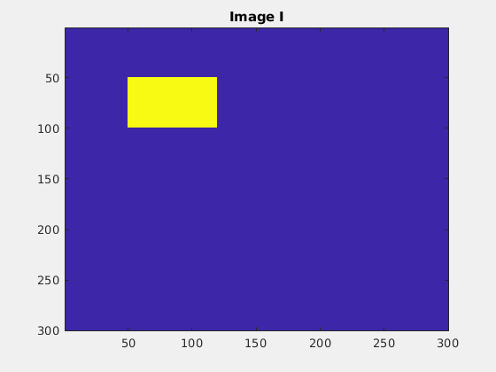
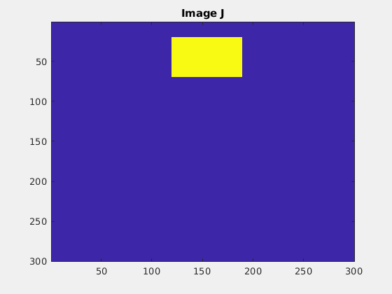
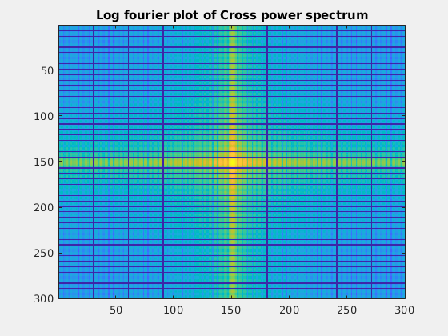
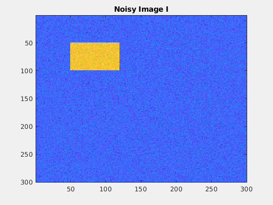
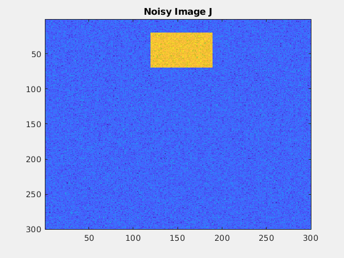
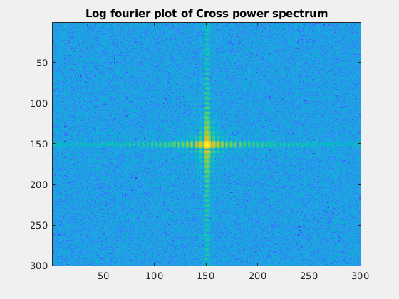
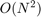
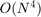
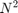

Contents
Image Alignment using DFT
Following are the test images I and J respectively, for the first test. I is translated by (-30,70) to get J.
  The predicted translation to align J with I is (30,230), which is equivalent to (30.000000,-70.000000).
Following are the test images with zero mean gaussian noise(sigma=20) added, for the second test. Again, I is translated by (-30,70) to get J.
  For this test, the predicted translation to align J with I is (30,230), which is equivalent to (30.000000,-70.000000).
Clearly, for both the tests, the prediction is found to be very accurate.
The bottleneck step in this algorithm is the computation of the cross power spectrum, which has complexity of , so roughly we can say the algorithm has time complexity of .
In a naive implementation, one could try out all the possible translations, compare all the pixels and check if the images look aligned. In this case the time complexity would be , because there are  possible translations and pixels to compare.
So, compared to the naive algorithm , the DFT based algorithm performs much better.
Elapsed time is 0.569313 seconds.